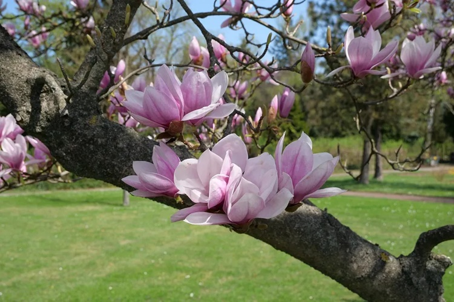

Magnólia
Conheça um pouco sobre a planta Magnólia!

A Magnólia grandiflora é uma planta primitiva e exuberante, existindo no planeta há mais de 90
milhões de anos. Ela se destaca no paisagismo mundial por suas flores grandes, esculturais e
intensamente perfumadas.
Tamanho:
6 a 30 metros, dependendo da espécie. A grandiflora possui de 12 a 24 metros.
Tronco/caule:
Madeira relativamente macia, casca amarga (plantas medicinais com sabor intenso, utilizadas para problemas digestivos e hepáticos), mais ou menos aromáticos.
Raíz:
Espessa, suculenta e rica em reservas de nutrientes (carnosa), mas que possui uma textura frágil e macia (delicada).
Rramo:
Apresentam cicatrizes das folhas e das estípulas que caíram.
Broto:
Pontiagudo
Folhas:
Largas, verde-escuras e brilhantes. Podem ser caducas (caem uma vez por ano) ou persistentes (mantém durante o ano todo).Podem ser finas ou grossas. Possuem nervuras (feixes vasculares (xilema e floema) responsáveis pela sustentação e transporte de seiva), normalmente acompanhadas de estípulas (pequenas estruturas em forma de lâmina ou escama, geralmente em pares, localizadas na base do pecíolo (inserção da folha no caule) de muitas plantas vasculares).
Flor:
Grandes, pétalas aveludadas e perfume suave. são solitárias, localizadas na ponta dos ramos. Podem ser sem pedúnculo (Haste que sustenta uma flor solitária ou fruto) ou com um pedúnculo curto. Normalmente brancas ou amareladas, dependendo da espécie pode ser rosa e roxa ou verde e amarela. Floresce geralmente na primavera.
Fruto:
Tem forma de cone e é formado por vários folículos (pequenas estruturas que se abrem quando maduras), geralmente de cor vermelha ou marrom.
Sementes:
São envolvidas por uma camada carnosa avermelhada e ficam penduradas por um longo filamento quando maduras.
Estaquia:
Estacas retiradas de brotos, depois de certa preparação utilizando hormônio para enraizamento, são plantadas em substrato. Após algumas semanas, a raíz já estará desenvolvida e pronta para ser replantada em outro lugar.
Alporquia:
um pequeno corte é feito em um broto, sem separá-lo da planta-mãe, onde é colocado hormônio enraizador e envolto com musgo, que deve ser mantido úmido e coberto com plástico. Após algumas semanas, a raíz ficará visível através do musgo, e então o broto poderá ser cortado e plantado.
Sementes:
Após serem coletadas e limpas, devem ser mantidas em refrigeração por 3 meses. Depois que a casca estoura, já podem ser retiradas da geladeira e plantadas no solo.
Clima:
Prefere regiões de clima temperado a subtropical. Elas sofrem com verões muito quentes e secos, preferem ambientes mais úmidos e sombreados. Suportam bem o frio, e algumas resistem até a temperaturas bastante baixas.
Solo:
Bem drenado, rico em matéria orgânica e levemente ácido. Desde que o solo seja profundo, leve e fértil, desenvolve-se bem mesmo sem muitos cuidados.
Luminosidade:
Pleno sol ou meia-sombra.
Rega:
Regular, principalmente nos primeiros anos.
Poda:
Apenas para remoção de galhos secos ou doentes.
Outros contatos: